무선설비산업기사 (2009-07-26 기출문제)
1과목: 디지털 전자회로
1. 다음 중 FET 회로에서 전압증폭도 Av는 약 얼마인가) ?단, gm=2[m℧], rd=10[kΩ], Vg=0.1[V]이고, Cs는 충분히 큰 값이다.)
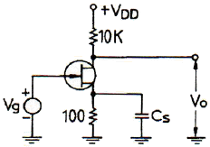
- -5
- -7
- -10
- 16
(정답률: 73%)

2. 이미터 접지형 증폭기에서 베이스 접지시 전류증폭률 α=0.9, ICO=0.1[mA], IB=0.5[mA]일 때 컬렉터 전류 IC는 몇 [mA] 인가?
- 4.6
- 5.0
- 5.5
- 8.5
(정답률: 72%)
3. 다음 그림과 같은 궤환회로는? (단, 입력이 Vi 이고 출력은 VO 이다.)
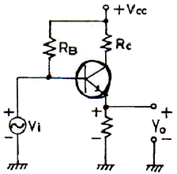
- Voltage series
- Current series
- Voltage shunt
- Current shunt
(정답률: 83%)
4. 다음 중 CR 발진기에 대한 설명으로 거리가 먼 것은?
- 낮은 주파수 범위에서 주로 사용된다.
- 이상형과 브리지형 발진기가 있다.
- LC 발진기에 비해 주파수 범위가 좁다.
- 주로 C급으로 동작시켜 효율을 높인다.
(정답률: 65%)
5. 그림과 같은 연산증폭기의 출력전압 VO[V]는? (단, V1=-2[V], V2=3[V], V3=1[V], R1=R2=R3=R4=200[kΩ], Rf=2[MΩ])
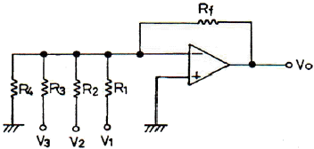
- -20
- -30
- -40
- -50
(정답률: 61%)
6. RC 직렬회로에 다음과 같은 양의 펄스를 인가했을 때 저항 R 양단의 전압을 나타내는 식은?
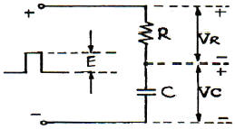
- VR = Ee-C/Rt
- VR = Ee-Rt/C
- VR = Ee-CRt
- VR = Ee-t/CR
(정답률: 50%)
7. 30:1의 리플 계수기를 설계할 때 최소로 필요한 플립플롭의 수는?
- 4
- 5
- 6
- 8
(정답률: 68%)
8. 다음 DTL(Diode Transistor Logic) 회로의 기능은? (단, A, B는 입력이고 Y는 출력, 정논리인 경우이다.)
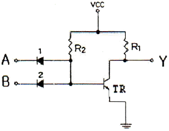
- AND
- NOT
- NAND
- EX-OR
(정답률: 67%)
9. 하틀레이 발진기에서 궤환 요소에 해당되는 것은?
- 콘덴서
- 저항
- 인덕터
- 능동소자
(정답률: 81%)
10. 다음 중 FET 증폭회로의 응용으로 가장 적합한 것은?
- 신호원 임피던스가 높은 증폭기의 초단
- 주파수 안정도를 높일 필요가 있는 증폭기의 끝단
- 신호원 임피던스가 높은 증폭기의 중간단
- 신호원 임피던스가 높은 증폭기의 끝단
(정답률: 71%)
11. 다음 중 Flip-Flop으로 구성할 수 없는 것은?
- Half Adder
- Register
- Counter
- RAM
(정답률: 65%)
12. 다음 카르노도를 간략화한 논리식은?
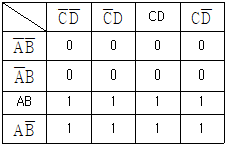
- Y = A
- Y = B
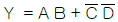
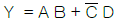
(정답률: 84%)
13. 다음 중 논리식 A(A+B+C)를 간단히 하면?
- 1
- 0
- B+C
- A
(정답률: 87%)
14. 증폭기와 RC 또는 LC 소자로 구성되는 궤환형 발진기 회로에서 증폭기에 의한 입력과 출력의 위상 차이는 몇 도 인가?
- 90도
- 180도
- 270도
- 300도
(정답률: 86%)
15. 아래의 CE 증폭기 회로에서 콘덴서 C1, C2 및 CE에 관한 명칭과 역할을 바르게 설명한 것은?
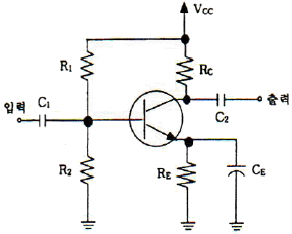
- CE는 결합 콘덴서로 증폭기의 앞과 뒤에 연결될 회로를 직류적으로 결합시키고, C1과 C2는 측로 콘덴서로 직류 전압이득을 증가시키는 기능을 한다.
- CE는 결합 콘덴서로 증폭기의 앞과 뒤에 연결될 회로를 교류적으로 결합시키고, C1과 C2는 측로 콘덴서로 교류 전압이득을 증가시키는 기능을 한다.
- C1과 C2는 결합 콘덴서로 증폭기의 앞과 뒤에 연결될 회로를 직류적으로 결합시키고, CE는 측로 콘덴서로 직류 전압이득을 증가시키는 기능을 한다.
- C1과 C2는 결합 콘덴서로 증폭기의 앞과 뒤에 연결될 회로를 교류적으로 결합시키고, CE는 측로 콘덴서로 교류 전압이득을 증가시키는 기능을 한다.
(정답률: 60%)
16. Diode 직선검파 회로에서 변조도 62[%], 진폭 10[V]인 피변조파(AM)가 인가되었을 때 출력 부하에 나타나는 실효치는 약 얼마인가) ?단, 검파효율은 73[%]이다.)
- 3.2[V]
- 0.64[V]
- 0.32[V]
- 0.16[V]
(정답률: 47%)
17. 다음 중 베이스접지(CB)형 증폭회로에 대한 일반적인 설명으로 틀린 것은?
- CC형보다 입력저항이 적다.
- CC형보다 출력저항이 적다.
- CC형보다 전류이득이 적다.
- 높은 임피던스 부하를 구동시킬 때 사용된다.
(정답률: 50%)
18. 다음 중 논리 게이트의 설명으로 틀린 것은?
- 부울식은 AND, OR, NOT의 연산자로 이루어진다.
- 기본 논리회로는 AND, OR, NOT 게이트로 나타낼 수 있다.
- 모든 부울식을 NAND 게이트로 나타낼 수 있다.
- 모든 부울식을 EXOR 게이트로 나타낼 수 있다.
(정답률: 76%)
19. 다음 중 회로에 구형파 입력 ei 가 인가될 때 출력 eo의 파형으로 가장 적합한 것은?
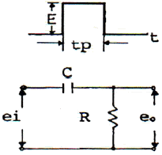
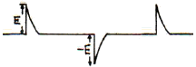
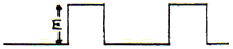
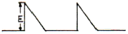
(정답률: 82%)
20. 다음 중 시미트(Schmitt) 트리거 회로의 응용과 거리가 먼 것은?
- 증폭회로
- 구형파회로
- 쌍안정회로
- 전압비교회로
(정답률: 44%)
2과목: 무선통신 기기
21. AM 송신기의 전력측정 방법으로 적합하지 않은 것은?
- 의사 공중선을 사용하는 방법
- 수부하에 의한 방법
- 양극 손실에 의한 방법
- 오실로스코프에 의한 방법
(정답률: 71%)
22. FM 무선통신기기에 사용되는 다음 회로에 대한 설명으로 적합하지 않은 것은?
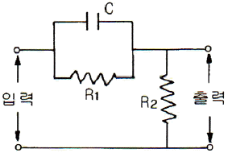
- 적분회로의 일종이다.
- pre-emphasis 회로의 일종이다.
- FM 송신기에 사용되는 회로이다.
- 입력신호의 고역(높은 주파수) 부분을 강조한다.
(정답률: 72%)
23. 고주파 증폭기의 이득이 30[dB]이고 변환이득이 -4[dB]인 슈퍼헤테로다인 수신기의 입력에 50[μV]의 고주파 전압을 인가했을 때 중간주파증폭기의 출력이 0.⑤[V]이면 중간주파수증폭기의 이득은 몇 [dB] 인가?
- 28[dB]
- 34[dB]
- 53[dB]
- 62[dB]
(정답률: 64%)
24. 변조속도가 2400[Baud]일 때 16상식 QAM 방식을 사용하는 경우의 데이터 신호속도는 몇 [bps] 인가?
- 2400[bps]
- 4800[bps]
- 7200[bps]
- 9600[bps]
(정답률: 75%)
25. 슈퍼헤테로다인 수신기에서 일반적으로 AGC는 어떠한 작용을 이용한 것인가?
- 궤환 작용
- 발진 작용
- 증폭 작용
- 변조 작용
(정답률: 77%)
26. 다음 중 FM 수신기에서만 쓰이는 것은?
- 국부 발진기
- 대역통과 필터
- 주파수 변환기
- 주파수 변별기
(정답률: 67%)
27. 과부하 잡음이 없는 경우 PCM 양자화시 사용 비트 수를 2비트 증가시키면 S/Nq(신호전력 대 양자화 잡음 전력비)는 약 몇 [dB] 개선(증가)되는가?
- 3[dB]
- 6[dB]
- 9[dB]
- 12[dB]
(정답률: 65%)
28. 54[MHz]의 반송파를 3[kHz]의 신호파로 FM 변조했을 때 최대 주파수 편이가 ±15[kHz]이다. 이 때 점유주파수 대역폭은 몇 [kHz] 인가?
- 18[kHz]
- 24[kHz]
- 36[kHz]
- 48[kHz]
(정답률: 75%)
29. 다음 중 FM 수신기의 감도 측정에 필요하지 않는 것은?
- 표준신호 발생기
- 의사공중선
- 가변 감쇠기
- 임피던스 변환기
(정답률: 59%)
30. QPSK 시스템에서 반송파 간 위상차는?
- π
- π/2
- π/4
- π/8
(정답률: 78%)
31. 16진 PSK의 대역폭 효율은 QPSK 대역폭 효율의 몇 배인가?
- 2배
- 3배
- 4배
- 8배
(정답률: 57%)
32. 진폭 변조에서 반송파 전력이 100[W]일 때 변조율이 60[%]라고 하면 한쪽 측파대의 전력은 몇 [W] 인가?
- 4.5[W]
- 6[W]
- 9[W]
- 18[W]
(정답률: 62%)
33. 다음 중 무선통신에서 변조를 하는 이유로 적합하지 않은 것은?
- 복사 용이
- 다중화 가능
- 잡음과 간섭 억제
- 근거리 전송에 유리
(정답률: 69%)
34. 다음 중 DSB 통신방식과 비교한 SSB 통신 방식의 특징에 대한 설명으로 적합하지 않은 것은?
- 점유주파수 대역폭은 DSB의 반이다.
- DSB에 비해 장치가 간단하다.
- DSB에 비해 선택성 페이딩에 강하다.
- DSB에 비해 작은 송신전력으로 양질의 통신이 가능하다.
(정답률: 86%)
35. 수신주파수가 840[kHz]이고, 중간주파수가 455[kHz]일 때 영상주파수는 몇 [kHz] 인가?
- 255[kHz]
- 385[kHz]
- 1225[kHz]
- 1750[kHz]
(정답률: 89%)
36. 전원 평활 회로에서 콘덴서 입력형과 비교한 초크 입력형의 특징에 대한 설명으로 적합하지 않은 것은?
- 콘덴서 입력형 보다 값이 비싸다.
- 맥동률은 부하저항이 클수록 좋다.
- 콘덴서 입력형보다 대전류에 적합하다.
- 전압변동률이 콘덴서 입력형보다 양호하다.
(정답률: 61%)
37. 다음 중 PM계 순시편이제어(ICD) 회로의 주요 구성으로 가장 적합한 것은?
- 미분회로, 클리퍼, 적분회로
- 미분회로, 프리엠퍼시스, 적분회로
- 미분회로, 디엠퍼시스, 클리퍼
- 적분회로, 디엠퍼시스, 클리퍼
(정답률: 76%)
38. 다음 중 슈퍼헤테로다인 수신기에서 스퓨리어스 응답의 주된 원인이 있는 부분은?
- 국부 발진부
- 저주파 증폭부
- 중간주파 증폭부
- 고주파 전력 증폭부
(정답률: 70%)
39. 다음 중 연축전지의 취급상 주의할 점으로 적합하지 않은 것은?
- 방전한 상태로 방치하지 말 것
- 충전은 규정 전류로 할 것
- 극판이 전해액 면에서 노출하지 않을 정도로 전해액을 보충해 둘 것
- 축전지의 전압이 약 1.4[V] 비중이 1.04 정도가 되면 방전을 정지시키고 곧 충전할 것
(정답률: 73%)
40. 다음 중 슈퍼헤테로다인 수신기에서 주파수 변환부의 혼합기(mixer)의 요구사항으로 적합하지 않은 것은?
- 잡음발생이 적어야 한다.
- 변환임피던스가 커야 한다.
- 동작이 안정되어야 한다.
- 국부발진출력이 외부로 누설되지 않아야 한다.
(정답률: 87%)
3과목: 안테나 개론
41. 다음 중 폴디드(folded) 다이폴 안테나에 대한 설명으로 적합하지 않은 것은?
- Q가 높아서 협대역 특성을 가진다.
- 실효길이는 반파장 다이폴 안테나의 약 2배이다.
- 전계강도, 이득, 지향성은 반파장 다이폴 안테나와 동일하다.
- 반파장 다이폴 안테나에 비해서 도체의 유효 단면적이 크고 복사저항이 크다.
(정답률: 61%)
42. 다음 중 통신위성과 지구국 사이의 통신에 이용되는 전파의 특성으로 가장 적합한 것은?
- 지표에서 감쇠가 적어야 한다.
- 대기 중에서 산란이 커야 한다.
- 전리층의 반사나 감쇠가 적어야 한다.
- 대기 중에서 흡수가 커야 한다.
(정답률: 64%)
43. 복사저항이 75[Ω]이고 손실저항이 25[Ω]이라고 할때 이 안테나의 복사효율은 몇 [%] 인가?
- 62.5[%]
- 65[%]
- 72.5[%]
- 75[%]
(정답률: 65%)
44. 다음 중 위성통신용 지구국 안테나로 가장 적합한 것은?
- 대수주기 안테나
- Slot array 안테나
- 카세그레인 안테나
- 슈퍼게인 안테나
(정답률: 78%)
45. 다음 중 슈퍼턴스타일(Super Turnstile) 안테나가 박쥐날개(Bat wing)형 소자로 구성된 주된 이유는?
- 이득을 높이기 위하여
- 선택도를 높이기 위하여
- 임피던스 정합을 위하여
- 광대역 특성을 얻기 위하여
(정답률: 70%)
46. 다음 중 안테나에 사용되는 연장 선륜의 역할로 가장 적합한 것은?
- 더 낮은 주파수에 공진시키기 위하여
- 지향성 안테나로 사용하기 위하여
- 낮은 출력으로 사용하기 위하여
- 짧은 파장에 공진시키기 위하여
(정답률: 66%)
47. 다음 중 도전율이 가장 큰 것은?
- 해수
- 도시
- 습지대
- 건조지대
(정답률: 78%)
48. 다음 중 반파장 다이폴 안테나에 관한 설명으로 옳은 것은?
- 상대이득이 1.64 이다.
- 실효길이가 π/λ 이다.
- 반치각은 약 68° 이다.
- 실효면적은 0.15λ2 이다.
(정답률: 70%)
49. 송신 안테나의 높이가 36[m]이고 수신 안테나의 높이가 25[m]일 때 기하학적 가시거리는 약 몇 [km] 인가?
- 25.7[km]
- 39.3[km]
- 45.2[km]
- 57.5[km]
(정답률: 63%)
50. 다음 중 산악회절파의 특징에 대한 설명으로 적합하지 않은 것은?
- 페이딩이 적고 안정하다.
- 간편한 시설 및 운용비가 저렴하다.
- 지리적 제한을 받지 않는다.
- 조건이 잘 맞도록 설계하면 매우 작은 전파손실로서 큰 전계강도를 얻을 수 있다.
(정답률: 73%)
51. 다음 중 방향 탐지용 안테나로 적합하지 않은 것은?
- 루프 안테나
- Braun 안테나
- 애드콕 안테나
- Bellini-Tosi 안테나
(정답률: 66%)
52. 일반적으로 최적 사용주파수(FOT)는 최고사용주파수(MUF)의 몇 [%] 인가?
- 60[%]
- 75[%]
- 85[%]
- 95[%]
(정답률: 83%)
53. 다음 급전선 중 외부잡음의 영향을 가장 적게 받는 것은?
- 단선식
- 평행 2선식
- 평행 4선식
- 동축케이블식
(정답률: 90%)
54. 다음 중 전파의 성질에 대한 설명으로 적합하지 않은 것은?
- 주파수가 높을수록 회절 작용이 심하다.
- 전파는 횡파(Transverse Wave)이다.
- 균일 매질 중을 전파하는 전자파는 직진한다.
- 서로 다른 매질의 경계면에서는 빛과 같이 굴절과 반사 작용이 있다.
(정답률: 75%)
55. 지표면으로부터 전리층을 향하여 수직으로 펄스파를 발사한 후 0.0004초에 반사파를 확인했다. 어느 층에서 반사되었는가?
- D층
- E층
- F1층
- F2층
(정답률: 60%)
56. 반파장 다이폴 안테나와 피측정 안테나에서 동일 방사전력으로 방사시킨 결과 최대 방사 방향에서의 전계강도가 동일 거리에서 각각 10[μV/m]와 100[μV/m]이었다면 피측정 안테나의 상대이득은 몇 [dB] 인가?
- 6[dB]
- 10[dB]
- 12[dB]
- 20[dB]
(정답률: 78%)
57. 다음 중 전자밀도의 시간적 변화율이 큰 일출, 일몰 시 현저한 페이딩은?
- 도약성 페이딩
- 간섭성 페이딩
- 흡수성 페이딩
- 편파성 페이딩
(정답률: 75%)
58. 렌즈안테나는 반사경을 쓰지 않고 전파렌즈를 두어 구면파를 평면파로 바꾸고 있다. 그 이유로 가장 적합한 것은?
- 인공잡음을 피하기 위하여
- 사용 대역폭을 넓히기 위하여
- 송신출력을 크게 하기 위하여
- 보다 첨예한 지향성을 얻기 위하여
(정답률: 77%)
59. 어느 안테나에 5[A]의 전류를 흘렸더니 300[W]의 복사 전력이 생겼다. 이 안테나의 복사저항은 몇 [Ω] 인가?
- 5[Ω]
- 8[Ω]
- 10[Ω]
- 12[Ω]
(정답률: 58%)
60. 동축 케이블과 비교한 도파관의 특징으로 옳지 않은 것은?
- 저역 필터의 역할을 한다.
- 복사손실이 없다.
- 표피작용에 의한 저항 손실이 적다.
- 유전체 손실이 작다.
(정답률: 65%)
4과목: 전자계산기 일반 및 무선설비기준
61. 다음 인터럽트에 대한 설명으로 틀린 것은?
- 인터럽트 발생시에 복귀주소는 스택(Stack)에 저장된다.
- 스택에 저장되는 값은 PC(Program Counter) 값이다.
- 스택에서 값을 가져오는 것을 Push라고 부른다.
- 인터럽트 서비스 루틴(ISR)의 마지막 명령어는 Return이다.
(정답률: 78%)
62. 마이크로프로세서 내에서 산술 연산의 기본 연산은?
- 덧셈
- 뺄셈
- 곱셈
- 나눗셈
(정답률: 83%)
63. 정보의 단위가 작은 것에서 큰 순으로 올바르게 나열된 것은?
- ③-①-④-②-⑤
- ①-②-④-⑤-③
- ①-④-②-⑤-③
- ③-①-②-⑤-④
(정답률: 71%)
64. 다음 A와 B의 값을 비교기 연산을 했을 때 올바른 값은?
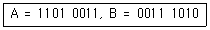
- 1010 1010
- 1110 1001
- 0001 0110
- 1110 0110
(정답률: 66%)
65. 다음 중 하나의 프로그램이 처리되는 과정을 옳게 나열한 것은?
- 번역 → 적재 → 실행
- 번역 → 실행 → 적재
- 적재 → 실행 → 번역
- 적재 → 번역 → 실행
(정답률: 63%)
66. 언팩 10진수 형식으로 “1111 0100 1111 0011 1111 0010 1101 0001“을 팩 10진수 형식으로 변환하면?
- 0000 0000 0000 0100 0011 0010 0001 1100
- 0000 0000 0000 0100 0011 0010 0001 1101
- 0000 0000 0000 0100 0011 0010 0001 1111
- 0000 0000 0000 0100 0011 0010 0001 1011
(정답률: 70%)
67. 구조화된(structured) 순서 제어문에 속하지 않는 것은?
- IF 문
- GOTO 문
- CASE 문
- SWITCH 문
(정답률: 89%)
68. 선형 리스트 중 마지막으로 입력한 자료가 제일 먼저 출력되는 LIFT(Last in first out) 구조는?
- 트리
- 스택
- 큐
- 섹터
(정답률: 75%)
69. 다음 중 보조기억장치의 특징이 아닌 것은?
- 대용량 정보를 장기보존하기 위해 사용한다.
- 기억용량을 주기억장치보다 크게 할 수 있다.
- 가격이 주기억장치보다 저렴하다.
- 주기억장치보다 정보를 읽는 속도가 빠르다.
(정답률: 87%)
70. 다음 중 자외선을 이용하여 내용을 지울 수 있는 ROM은?
- 마스크 ROM
- PROM
- (UV)EPROM
- EEROM
(정답률: 77%)
71. 다음 중 무선국 개설허가의 유효기간이 5년이 아닌 것은?
- 이동국
- 아마추어국
- 간이무선국
- 실용화시험국
(정답률: 69%)
72. 다음 중 VHF대의 주파수 범위는?
- 3[MHz] 초과 30[MHz] 이하
- 30[MHz] 초과 300[MHz] 이하
- 300[MHz] 초과 30000[MHz] 이하
- 3[GHz] 초과 30[GHz] 이하
(정답률: 68%)
73. 다음 중 공중선계가 충족하여야 할 조건으로 적합하지 않은 것은?
- 공중선을 이득이 높을 것
- 공중선은 선택도가 높을 것
- 정합은 신호의 반사손실이 최소화 되도록 할 것
- 지향성은 복사되는 전력이 목표하는 방향을 벗어나지 아니하도록 안정적일 것
(정답률: 50%)
74. 디지털텔레비전방송국의 송신설비에 대한 공중선전력 허용편차는 얼마인가?
- 상한 5%, 하한 5%
- 상한 5%, 하한 10%
- 상한 10%, 하한 20%
- 상한 20%, 하한 10%
(정답률: 59%)
75. 산업용 전파응용설비의 전계강도의 허용치는 100미터 거리에서 몇 [μV/m] 이하이어야 하는가?
- 10[μV/m]
- 50[μV/m]
- 100[μV/m]
- 200[μV/m]
(정답률: 45%)
76. 무선설비는 전원이 정격전압의 몇 [%] 이내의 범위에서 변동된 경우에도 안정적으로 동작할 수 있어야 하는 가?
- ±5[%]
- ±10[%]
- ±15[%]
- ±20[%]
(정답률: 82%)
77. 항공법에 따라 항공기에 의무적으로 개설하여야 하는 무선국 개설허가의 유효기간은?
- 5년
- 10년
- 20년
- 무기한
(정답률: 62%)
78. 전파연구소장은 인증신청이 있는 경우에 인증신청의 접수일로부터 특별한 사유가 없는 한 며칠 이내에 처리해야 하는가?
- 3일
- 5일
- 7일
- 10일
(정답률: 67%)
79. 다음 중 부표 등에 탑재되어 위치 또는 기상관련 자료 등을 자동으로 송신하는 무선설비를 말하는 것은?
- 레이콘
- 라디오 부이
- 텔레미터
- 라디오 존데
(정답률: 76%)
80. 다음 중 인증의 모두가 면제되는 기기가 아닌 것은?
- 시험연구를 위하여 수입하는 방송통신기기
- 여행자가 판매를 목적으로 반입하는 방송통신기기
- 외국으로부터 도입하는 항공기에 설치된 방송통신기기
- 국내에서 판매하지 아니하고 수출전용으로 제조하는
(정답률: 68%)